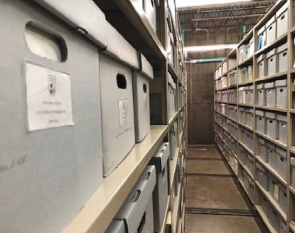
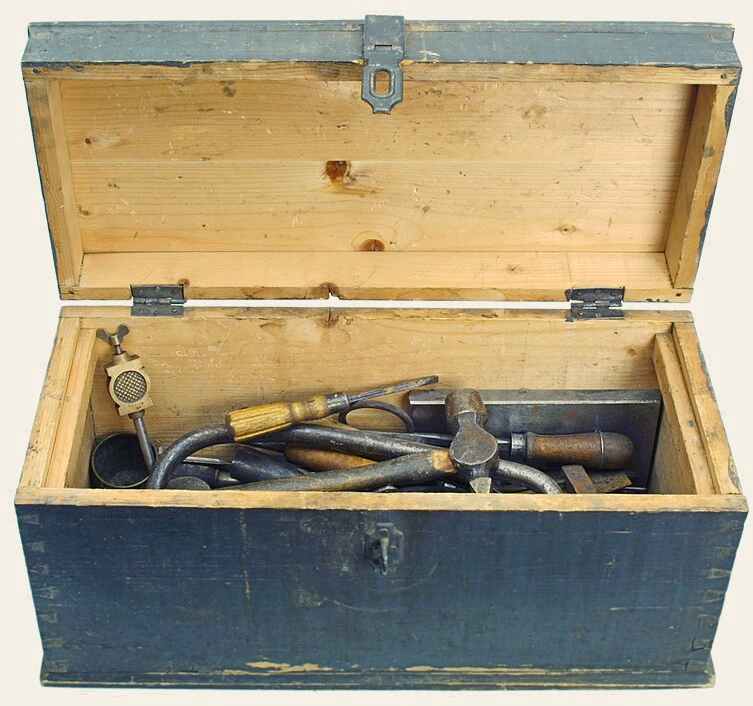
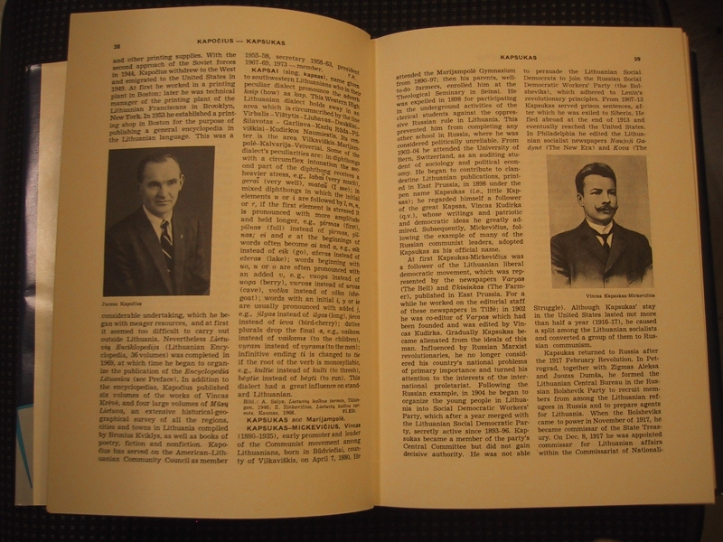
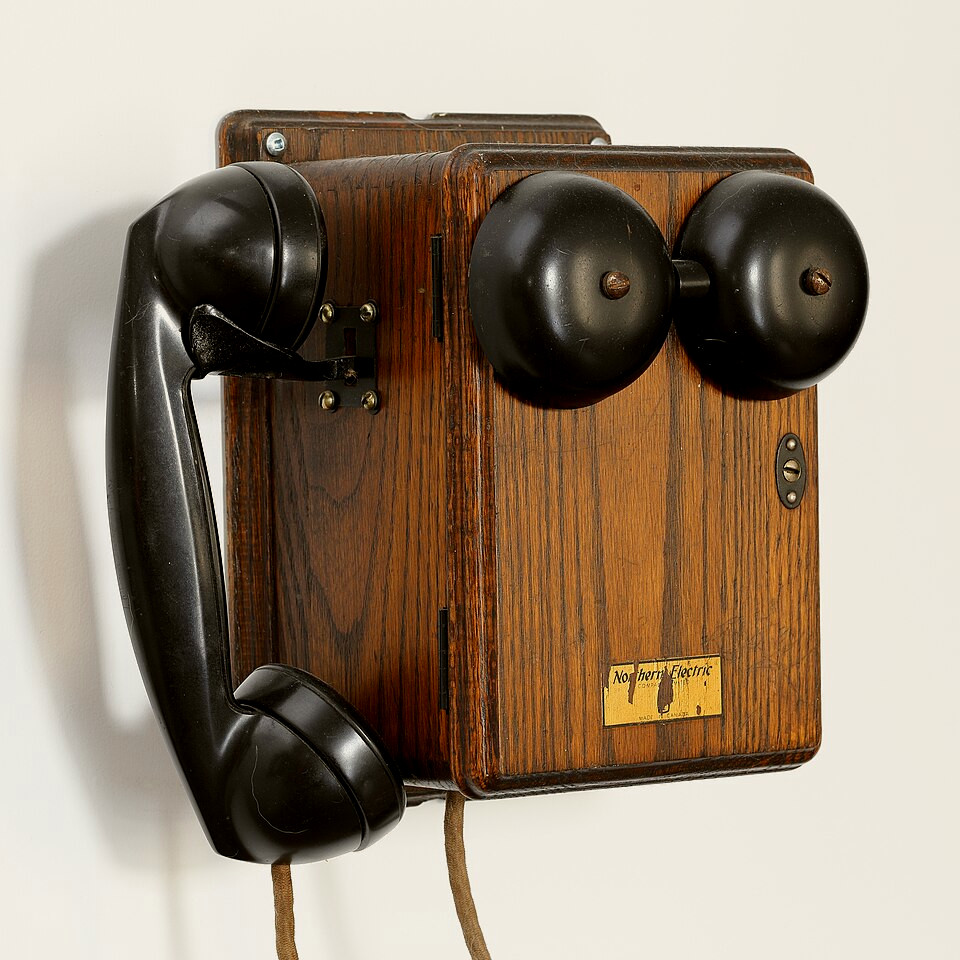

Project Archive

A curated selection of my work in library science, professional writing, and game design. Each project includes a description of the problem, my approach, and the outcomes achieved. Explore the archive to see how I apply my skills to real-world challenges.
Toolbox

The design tools, software, and programming languages I use to create my work. It includes my proficiency level and the last time I updated my skills in each area.
About

View my resume and learn about my background, experience, and the principles that guide my work. This section provides insight into my professional journey and the values that shape my approach to information design and communication.
Contact

Get in touch with me for professional inquiries, collaborations, or to discuss potential projects.